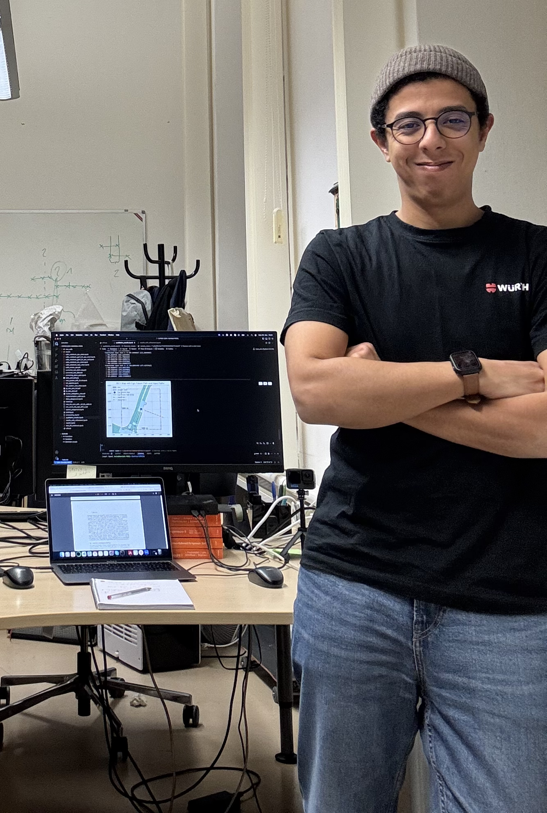

Reasoning and decision making under uncertainty
I am a postdoctoral researcher at the Telecooperation Lab, Technical University of Darmstadt. I received my PhD in Computer Science from TU Darmstadt in 2025 (summa cum laude) for my dissertation On Uncertainty-Aware Perception, Prediction, and Planning.
My research develops methods for reliable reasoning and decision making under uncertainty. It connects statistical reliability in machine learning with structured reasoning, human–AI interaction, and the post-training and evaluation of large language models. I am particularly interested in systems that must remain dependable when data distributions, sensing conditions, model representations, or decision contexts change after development.
This agenda spans uncertainty quantification and conformal prediction under distribution shift, reliable reasoning and post-training of foundation models, and decision mechanisms that use uncertainty to govern interaction between AI systems and human users.
News
- May 2026Received the ICML 2026 Gold Reviewer Award.
- May 2026Conformal Calibration Transfer accepted at ICML 2026.
- May 2026Position: Uncertainty is a Strategic Signal in Human–AI Decision Making accepted at ICML 2026.
- Jul 2025Began a research visit at Tongji University, Shanghai, focusing on LLM-based structured reasoning and decision making for urban planning.
- Jun 2025PhD in Computer Science awarded summa cum laude at TU Darmstadt.
Selected Publications
- ICML 2026Conformal Calibration Transfer
- ICML 2026Position: Uncertainty is a Strategic Signal in Human–AI Decision Making
- NAACL 2025CLEAR-Command: Coordinated Listening, Extraction, and Allocation for Emergency Response with Large Language Models
- ICSE 2025MARQ: Engineering Mission-Critical AI-Based Software with Automated Result Quality Adaptation
- CoRL 2024Conformal Prediction for Semantically-Aware Autonomous Perception in Urban Environments
- IROS 2024NeSyMoF: A Neuro-Symbolic Model for Motion Forecasting
- arXiv 2025SafePath: Conformal Prediction for Safe LLM-Based Autonomous Navigation
Academic Profile
Funding & Honors
- Software Campus Fellowship and BMBF research grant (EUR 100,000), 2022–2025; project lead for SemUrban.
- ICML 2026 Gold Reviewer Award.
- PhD awarded summa cum laude, TU Darmstadt, 2025.
Service & Supervision
- Reviewer for ICML, NeurIPS, KDD, ICCV, NAACL, ICRA, and IEEE Robotics and Automation Letters.
- Supervised 10+ Bachelor’s and Master’s theses across machine learning, uncertainty quantification, neuro-symbolic learning, LLM-based systems, and human–AI interaction.
- Teaching: Distributed Algorithms; Ubiquitous Computing – Machine Learning.